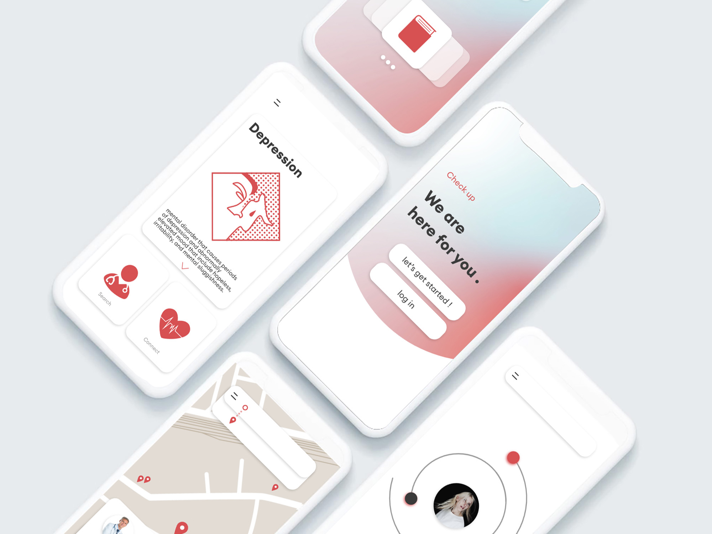
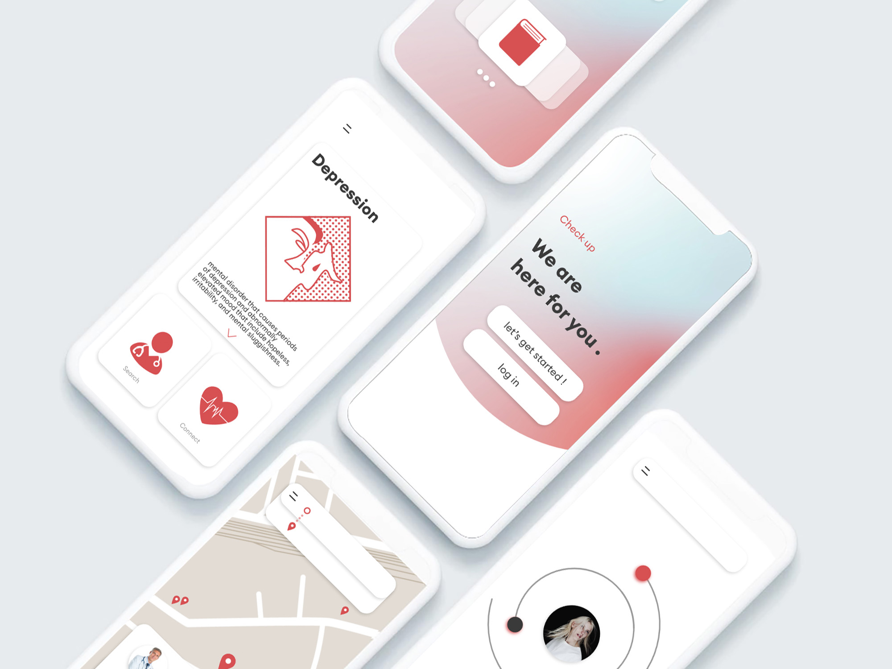

Most of the patients with mental disorder do not recognize the fact that they are suffering such illness. As people are more aloof to others, patients tend to lose the "golden time" to cure disorders. With the personal checkup app that enables the patients to communicate with doctors, therapists, and other patients directly, it helps the process more convenient. Especially for those who suffer social interaction with the outside world, they can easily set up appointments and service through this app.
 
